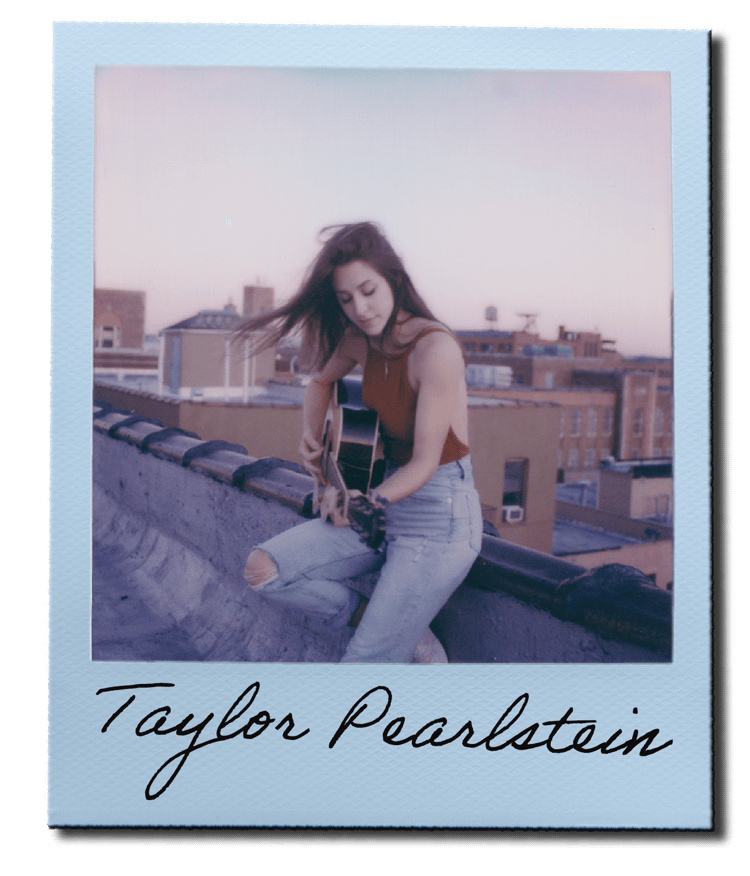

Taylor Pearlstein
An NYC-based indie-pop singer/songwriter with an ethereal sound, Taylor Pearlstein hails from the pacific Northwest and has roots in theater and folk music.
Taylor played 4 original songs in her set with us, each on a different instrument. She's a talented multi-instrumentalist, but her incredible vocal control and powerful lyrics are the heart of her performance, and you'll catch yourself singing song snippets days after watching.
You can catch more of her at these links: